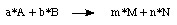
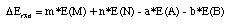
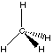
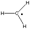
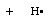
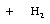

Reaction Energetics
The reaction energy for a generalized reaction in which reactants A and B
react in ratios given by the stochiometric constants a and b to products
M and N such as

is defined as:

This equation can be evaluated using all types of energies discussed in the previous
chapter (Etot, E0, E298, H298, G298).
The conceptually most simple reactions are those in which only one bond undergoes
reaction, a typical case being the homolytic bond dissociation reaction yielding
two radicals. Taking the C-H bond dissociation in methane as an example, the following results
are obtained at the HF/6-31G(d) level of theory (the UHF(6-31G(d) level being used
for the open shell products):
type of
energy | E(CH4) | E(CH3) | E(H) | Erxn
[kJ/mol) |
|---|
| Etot | -40.195172 | -39.558992 | -0.498233 | +362.2 |
| E0 | -40.147395 | -39.528021 | -0.498233 | +318.1 |
| E298 | -40.144543 | -39.524770 | -0.496817 | +322.8 |
| H298 | -40.143599 | -39.523825 | -0.495872 | +325.3 |
| G298 | -40.164692 | -39.546258 | -0.508887 | +287.6 |
| |
 |
|
 |
 |
This bond dissociation reaction is strongly endothermic in all cases considered here.
The most positive reaction energy (+362.2 kJ/mol) is obtained when using total energies
at 0K describing a vibrationless system sitting on the potential energy surface. Additional
consideration of zero point vibrational energies leads to a significant change, in the
current case lowering the reaction energy to +318.1 kJ/mol. Correction to internal energies
at 298 K appears to be rather modest in comparison. The difference between E298 and
H298 equates to RT (=+2.479 kJ/mol at 298.15 K) since we have two products, but
only one reactant. Finally, accounting for differences in reaction entropies we obtain
a free energy of reaction of +287.6 kJ/mol.
Comparison to experiment can be made at the stage of H298 as the standard
heats of formation of all three species are known. From the
NIST Chemistry WebBook we take the following
heats of formation: CH4 (-74.87 kJ/mol), CH3 (+145.69 kJ/mol),
and H (+218.0 kJ/mol). This yields a reaction enthalpy for C-H bond homolysis in methane
of +438.56 kJ/mol. The recommended value in a recent compilation of bond dissociation energies
(Yun-Ran Luo, "Handbook of Bond Dissociation Energies in Organic Compounds", CRC Press, 2003)
is +439.3 +/-0.4 kJ/mol.
Comparison of this value with our theoretical results suggests that the HF/6-31G(d) level is
quite inaccurate when it comes to predicting bond dissociation energies. The deviation of
113 kJ/mol is mainly due
to the neglect of electron correlation in the Hartree-Fock (HF) treatment and can only
be remedied by using a better theoretical method. That the deficiencies of
Hartree-Fock theory have serious consequences here is, of course, due to the fact that
bond dissociation processes are accompanied by a large change in correlation
energy.
A much better performance of the HF-level can be observed in reactions, in which the number
of electron pairs remains constant during the reaction. These types of reactions are known
as isogyric reactions and are often used to reliably calculate
thermochemical data at lower levels of theory. Taking the reaction of methane (CH4)
with the hydrogen atom to yield the methyl radical (CH3) and molecular hydrogen
(H2) as an example, the following results are obtained at the HF/6-31G(d) level of
theory (again using the UHF/6-31G(d) level for open shell systems):
type of
energy | E(CH4) | E(H) | E(CH3) | E(H2) | Erxn
[kJ/mol) |
|---|
| Etot | -40.195172 | -0.498233 | -39.558992 | -1.126828 | +19.9 |
| E0 | -40.147395 | -0.498233 | -39.528021 | -1.116243 | +3.6 |
| E298 | -40.144543 | -0.496817 | -39.524770 | -1.113883 | +7.1 |
| H298 | -40.143599 | -0.495872 | -39.523825 | -1.112939 | +7.1 |
| G298 | -40.164692 | -0.508887 | -39.546258 | -1.127698 | -9.9 |
| |
|
|
|
|
 |
The reaction enegies for this hydrogen transfer reaction are much smaller in
absolute terms than for the bond dissociation reaction considered before. This
indicates that the C-H bond strength in methane and the H-H bond strength in
molecular hydrogen is rather similar.
In order to calculate the reaction enthalpy at 298.15K we only need the three
heats of formation for CH4, CH3, and H as before, and have to recall
that molecular hydrogen H2 (in the gas phase) represents the reference
against which heats of formation are defined. The experimental reaction enthalpy for
our isogyric model reaction therefore amounts to +2.56 kJ/mol.
The comparison of the experimentally measured and the theoretically predicted reaction enthalpy
shows a much better agreement now, the theoretical value being too high by only
4.5 kJ/mol. Improving on this result does not only need significantly better theoretical
methods but also a better thermochemical model than the rigid-rotor/harmonic oscillator
model.
On a more general note the predictive value of HF theory will be larger for those
reactions, in which the products are as similar as possible to the reactants
(e.g. isomerization reaction). A subclass of these types of reactions are
isodesmic reactions in which the numbers of bonds of
each formal type are the same for reactants and products. Using the reaction of
dimethyl ether with water to yield two methanol molecules as an example, we can
see that there are 6 C-H bonds, 2 C-O bonds, and 2 H-O bonds on both sides of
the reaction equation:
The experimentally measured reaction enthalpy for this reaction amounts to +23.9 kJ/mol
at 298.15 K. Calculations at the HF/6-31G(d) level of theory predict a value
of +14.9 kJ/mol. For further examples see "Ab Initio Molecular Orbital Theory", W. J. Hehre,
L. Radom, P. v. R. Schleyer, J. A. Pople, Wiley&Sons, 1986.
last changes: 23.11.2006, HZ
questions & comments to: zipse@cup.uni-muenchen.de